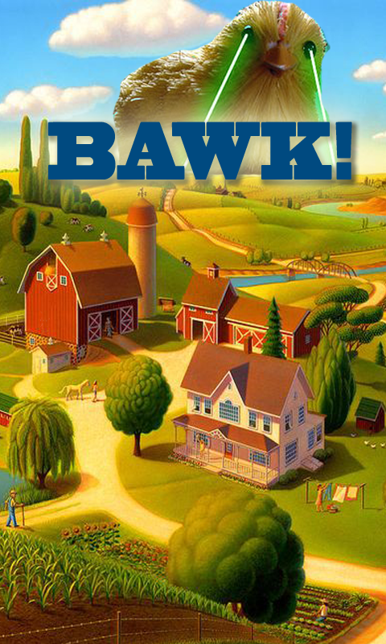

EECS 493 Final Project
Ali Abdulhamid, Kaitlyn Frank,
Daniel Miller
Our final project is a modern Android version of the 1990's puzzle
game Zoop.
Our final project is a modern Android version of the 1990's puzzle
game Zoop.